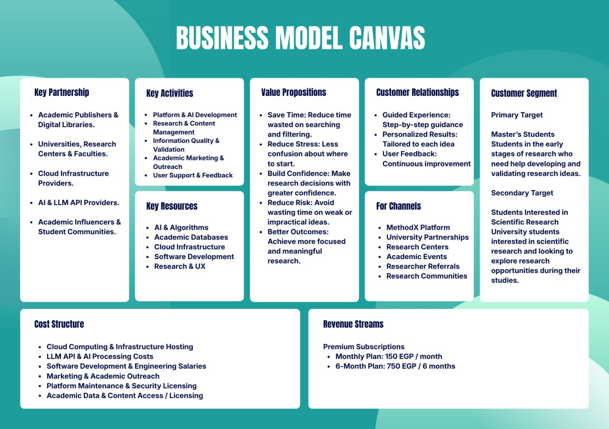

02Selected work
01Three projects.
DEPI capstone · team of four
Cardiovascular Risk Analysis
We cleaned and processed 319K+ records and presented the results in a six-page interactive Power BI dashboard.
SQL ServerPythonPower BI
View on GitHub →
BreakIN Point Team
MethodX
AI-powered academic research platform. I was a business team member: I researched the target audience, defined the user personas, and contributed to the business model and market sizing.
View on GitHub →
InnovEgypt Program
Zenova
Team concept for a mobile app that helps kids and parents manage screen time. My part: the research and the final presentation.
View on GitHub →